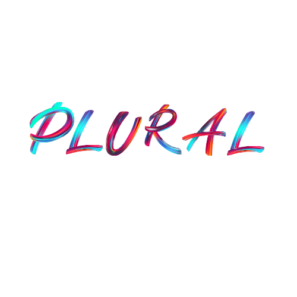

Malaysian Cultural Arts
FEATURE ARTIST

June 21, 2025
Highlighting Eli Gee
Eli Gee is a rising Malaysian creative artist best known for her heartfelt, DIY-style projects that fuse illustration, craft, and introspection. Her series "My Heart On Your Sleeve"—a collection of printed thoughts on clothing modeled by friends—resonates with raw honesty and emotional relatability. Eli’s work speaks to a generation of creators trying to express vulnerability through handmade mediums.
In a world that often chases perfection, Eli’s art feels refreshingly grounded. From zines and poetry pieces to plushies and hand-drawn stickers, her pieces often find homes on platforms like Etsy and BigCartel. What sets her apart is the intimate connection she creates with her audience, blurring the lines between creator and community.


"Everything I make starts from a feeling—somewhere between being too much and not enough." — Eli Gee
As a strong voice in Malaysia’s indie art scene, Eli Gee continues to inspire others to embrace imperfections and share their authentic stories. Her journey proves that you don’t need a gallery to make an impact—just sincerity, a platform, and the courage to be seen.
Eli Gee